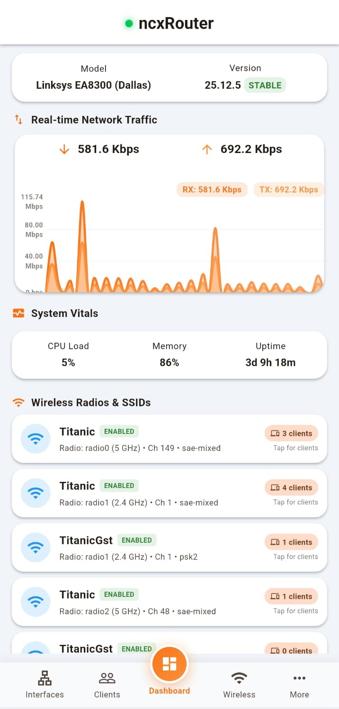

Featured Apps
Android mobile app for OpenWrt router administration. Features dynamic CPU/RAM
real-time charts, client lease tracking, VPN and connectivity status and activation
control, storage monitoring, and custom ubus-rpc
daemonless backend.

About Me
DevOps and Cloud Engineering enthusiast with hands-on experience building serverless and containerized systems on AWS. Skilled in CI/CD automation, infrastructure design, and system-level debugging, with practical exposure to Kubernetes, Linux internals, and large-scale testing across distributed environments.
Skills
Languages & Scripting
DevOps & Cloud
Tools & Platforms
Projects
Yet Another LuCI App — Flutter OpenWrt Router Manager
Android application for OpenWrt router monitoring and management built with Flutter and Dart.
Empowers users to manage OpenWrt routers natively on Android. Delivers real-time CPU & RAM chart visualizations, DHCP lease & client monitoring, VPN and Secure tunnels monitring and managing, and storage health metrics via lightweight ubus-rpc without needing the LuCI web interface.
uCI Client Manager — OpenWrt Network Management Suite
Lightweight, daemonless enterprise client management app for OpenWrt routers built with POSIX Shell, JSON-RPC, and Vanilla JS.
A high-performance, zero-daemon LuCI application for OpenWrt routers. Features real-time client traffic monitoring, kernel-level nftables bandwidth speed limiting, Wi-Fi MAC filtering, and internet access control—designed with zero persistent memory overhead for resource-constrained hardware.
Zero Downtime Application Deployment using Kubernetes & AWS
- Designed and implemented a highly available cloud-native deployment architecture using Amazon EKS and AWS services.
- Implemented Kubernetes rolling updates, readiness probes, and liveness probes to achieve zero-downtime deployments and self-healing recovery.
- Configured Horizontal Pod Autoscaler (HPA) to dynamically scale workloads based on CPU utilization during high traffic conditions.
- Implemented warm standby disaster recovery architecture using Route 53 health checks and multi-region failover.
- Integrated monitoring and observability tools including Prometheus, Grafana, and CloudWatch for tracking system health and scaling behavior.
Secure CI/CD Pipeline with Jenkins & Docker Scout
- Implemented a CI/CD pipeline using Jenkins and Docker.
- Integrated Docker Scout for container vulnerability analysis and image security assessment.
- Automated build workflows while incorporating security checks into the deployment pipeline.
- Documented DevSecOps workflow implementation and remediation practices.
Serverless EC2 Monitor & Control Dashboard
A comprehensive serverless solution for real-time EC2 monitoring with email alerts, scalable and cost-effective architecture.
Side Projects
Warp-NextDNS Manager
Integration of Cloudflare WARP with NextDNS without relying on Cloudflare DNS for enhanced privacy and performance.
Network Switcher (Android App)
Android app to toggle network modes like 5G only for better control over network connectivity.
BookDrive (Browser Extension)
Browser extension for syncing bookmarks via personal or self-hosted cloud storage solutions.
Research & Articles
IJIRSET Publication
Academic PaperTitle: Build & Deploy a Cloud-Native Serverless Monitoring System
Medium Articles
Technical WritingAchievements
-
Nothing Phone 2 (Pong) Community
Custom ROM Community Open Source Contributions
04/2025 – Present- Tested and validated multiple custom Android ROMs including crDroid, LineageOS, AOSPA (Paranoid Android), VoltageOS, AxionOS, HalogenOS, MistOS, etc
- Identified system-level bugs, performance bottlenecks, and stability issues across builds
- Captured and analyzed diagnostic logs (logcat, dmesg) to support debugging and root cause analysis
- Collaborated with developers to improve ROM stability, device compatibility, and feature reliability
-
Custom ROM Tester (Community)
Multi-Device Custom ROM Community Open Source Contributions
06/2017 – 03/2025- Performed cross-device ROM testing on Redmi 3S (land), Poco F4 (munch), Xiaomi Pad 6 (pipa), Nothing Phone 1 (spacewar)
- Validated ROMs including crDroid, LineageOS (CyanogenMod), AOSPA, Resurrection Remix, Pixel Experience, Bliss ROM, HydrogenOS, etc
- Worked with GApps/microG environments and root solutions (Magisk, KernelSU, SuperSU)
- Tested system-level modifications using LSPosed / Xposed Framework
- Executed flashing, recovery, and restoration via fastboot, TWRP, OrangeFox, and EDL mode
- Assisted in debugging experimental builds and improving cross-device ROM stability
Education
Master of Computer Applications (MCA)
2024–2026Bengaluru, India
Certifications
Ethical Hacking & Information Security
NIELIT GorakhpurCredential ID: NIELIT/GKP/339/5080
View CertificateIntroduction to Industry 4.0 & IoT
NPTEL, IIT KharagpurCredential ID: NPTEL22CS95S64661116
View Certificate